Note
Go to the end to download the full example code.
NDDataset baseline correction
In this example, we perform a baseline correction of a 2D NDDataset
interactively, using the multivariate method and a pchip/polynomial interpolation.
For comparison, we also use the asls`and `snip models.
As usual we start by importing the useful library, and at least the spectrochempy library.
import spectrochempy as scp
Load data
datadir = scp.preferences.datadir
nd = scp.NDDataset.read_omnic(datadir / "irdata" / "nh4y-activation.spg")
Do some slicing to keep only the interesting region
Plot the dataset
_ = ndp.plot()
Remove a basic linear baseline using basc:
Make it positive
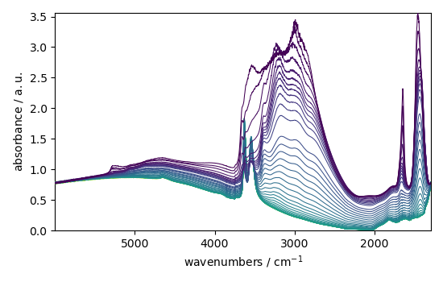Define the Baseline object for a multivariate baseline correction model.
The n_components parameter is the number of components to use for the
multivariate baseline correction. The model parameter is the baseline
correction model to use, here a pchip interpolation (piecewise cubic
Hermite interpolation).
blc = scp.Baseline(
log_level="INFO",
multivariate=True, # use a multivariate baseline correction approach
model="polynomial", # use a polynomial model
order="pchip", # with a pchip interpolation method
n_components=5,
)
Now we select the regions ( ranges ) to use for the baseline correction.
blc.ranges = [
[1556.30, 1568.26],
[1795.00, 1956.75],
[3766.03, 3915.81],
[4574.26, 4616.04],
[4980.10, 4998.01],
[5437.52, 5994.70],
]
We can now fit the baseline correction model to the data:
The baseline is now stored in the baseline attribute of the processor:
(note that the baseline is a NDDataset too).
The corrected dataset (the dataset after the baseline subtraction) is
stored in the corrected attribute of the processor:
Plot the result of the correction
_ = corrected.plot()
We can have a more detailed representation using plot
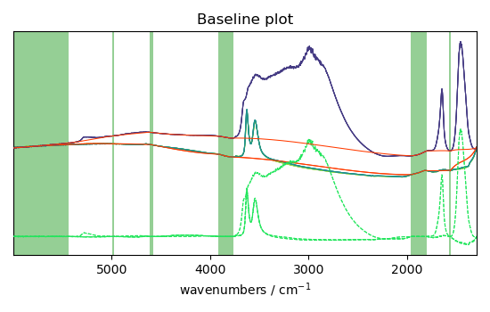We can also plot the baseline and the corrected dataset together: for some individual spectra to, for example, check the quality of the correction:
- 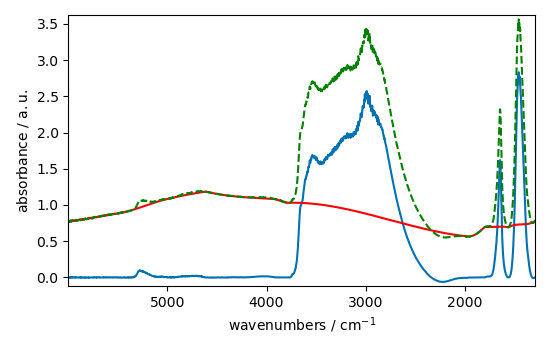
- 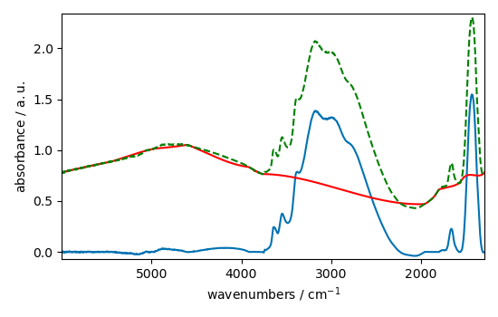
The baseline correction looks ok in some part of the spectra
but not in others where the variation seems a little to rigid.
This is may be due to the fact that the pchip interpolation
is perhaps not the best choice for this dataset. We can try to use a
n-th degree polynomial model instead:
We don’t need to redefine a new Baseline object, we can just change the model and the order of the polynomial:
and fit again the baseline correction model to the data:
blc.fit(ndp)
baseline = blc.baseline
corrected = blc.corrected
_ = corrected[0].plot()
_ = baseline[0].plot(clear=False, color="red", ls="-")
_ = ndp[0].plot(clear=False, color="green", ls="--")
_ = corrected[10].plot()
_ = baseline[10].plot(clear=False, color="red", ls="-")
_ = ndp[10].plot(clear=False, color="green", ls="--")
_ = corrected.plot()
- 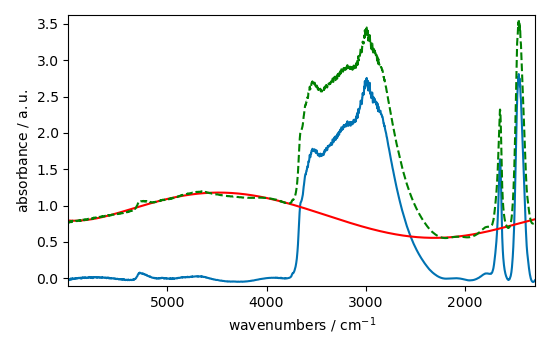
- 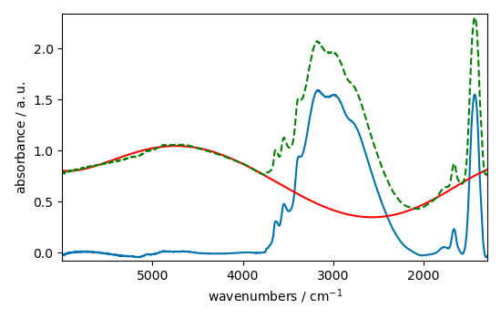
- 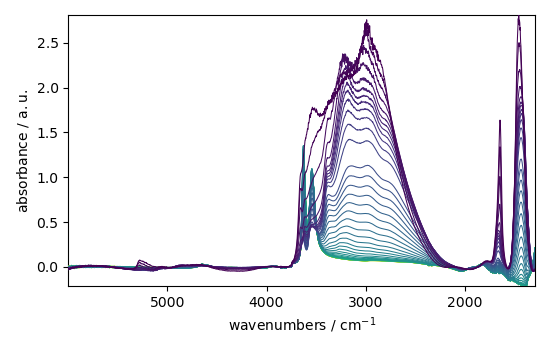
This looks better and smoother. But not perfect.
We can also try to use a asls (Asymmetric Least Squares) model
instead. This model is based on the work of Eilers and Boelens (2005)
and performs a baseline correction by iteratively fitting asymmetrically
weighted least squares regression curves to the data.
The asls model has two parameters: mu and assymetry.
The mu parameter is a regularisation parameters which control
the smoothness of the baseline. The larger mu is, the smoother
the baseline will be. The assymetry parameter is a parameter
which control the assymetry if the AsLS algorithm.
blc.multivariate = False # use a sequential approach
blc.model = "asls"
blc.mu = 10**9
blc.asymmetry = 0.002
blc.fit(ndp)
baseline = blc.baseline
corrected = blc.corrected
_ = corrected[0].plot()
_ = baseline[0].plot(clear=False, color="red", ls="-")
_ = ndp[0].plot(clear=False, color="green", ls="--")
_ = corrected[-1].plot()
_ = baseline[-1].plot(clear=False, color="red", ls="-")
_ = ndp[-1].plot(clear=False, color="green", ls="--")
_ = corrected.plot()
- 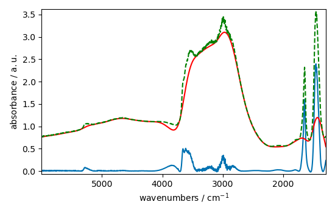
- 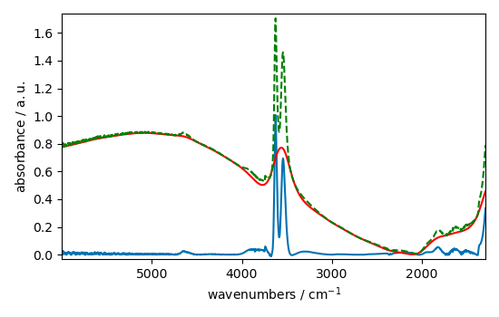
- 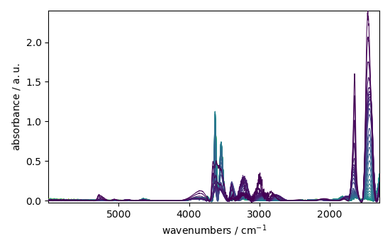
99999.49622650011
0.24660331763260296
0.14665656358795823
0.08444480851935286
0.0785295924636494
0.038550890845791524
0.02162113454843334
0.014278107720663527
0.012238378046283024
0.005915216055703461
0.005915216055703462
0.003875486381322957
0.0034675404464468568
0.004079459348761008
0.001019864837190252
0.0
Convergence reached in 15 iterations
99999.49133114889
0.2565979930370674
0.1413532664345689
0.0805693221380299
0.06241572803604341
0.037531026008601275
0.025088674994880197
0.006935080892893713
0.006935080892893713
0.006119189023141511
0.00530329715338931
0.003875486381322957
0.00550727012082736
0.0024476756092566047
0.0012238378046283023
0.00040794593487610074
Convergence reached in 15 iterations
99999.50234568912
0.24599139873028875
0.14441286094613967
0.0826090518124104
0.06282367397091952
0.04405816096661888
0.020397296743805037
0.01631783739504403
0.006731107925455663
0.008566864632398115
0.0034675404464468563
0.0028556215441327055
0.001427810772066353
0.0006119189023141512
Convergence reached in 13 iterations
99999.49133114889
0.2519066147859922
0.14176121236944503
0.08668851116117142
0.056704484947778015
0.04079459348761008
0.027128404669260704
0.015705918492729877
0.008158918697522015
0.009178783534712267
0.0036715134138849063
0.0012238378046283025
0.00040794593487610074
Convergence reached in 12 iterations
99999.49194306778
0.25027483104648784
0.13890559082531231
0.09219578128199876
0.053644890436207245
0.03181978292033587
0.024884702027442147
0.011626459143968872
0.010810567274216669
0.0069350808928937135
0.002039729674380504
0.0
Convergence reached in 11 iterations
99999.50724104035
0.24089207454433748
0.13706983411836987
0.0817931599426582
0.052013106696702845
0.03181978292033586
0.02100921564611919
0.013870161785787427
0.010402621339340569
0.0034675404464468563
0.001631783739504403
0.0
Convergence reached in 11 iterations
99999.49357485153
0.24741920950235513
0.13217448289985662
0.08281302477984845
0.046709809543313545
0.029984026213393408
0.022029080483309437
0.01672578332992013
0.011830432111406922
0.0044874052836371085
0.002039729674380504
0.00020397296743805037
Convergence reached in 11 iterations
99999.496838419
0.25517018226500104
0.13217448289985664
0.08240507884497236
0.05405283637108335
0.02366086422281384
0.02039729674380504
0.009994675404464469
0.009178783534712267
0.004691378251075159
0.0008158918697522015
Convergence reached in 10 iterations
99999.49928609462
0.24619537169772682
0.12544337497440097
0.07791767356133524
0.04854556625025599
0.019377431906614787
0.021009215646119187
0.010198648371902519
0.005711243088265411
0.007954945730083965
0.002651648576694655
0.0012238378046283023
0.0
Convergence reached in 12 iterations
99999.49765431088
0.25109072291624
0.1274831046487815
0.0805693221380299
0.04283432316199059
0.021417161580995294
0.03365553962727831
0.014890026622977677
0.006731107925455662
0.002651648576694655
0.001019864837190252
0.0
Convergence reached in 11 iterations
99999.49398279747
0.24293180421871802
0.1323784558672947
0.07689780872414499
0.03977472865041982
0.02039729674380504
0.028556215441327054
0.011830432111406922
0.006323161990579562
0.003875486381322957
0.00040794593487610074
Convergence reached in 10 iterations
99999.49581855418
0.2441556420233463
0.1323784558672947
0.06853491705918492
0.03793897194347737
0.025292647962318247
0.018765513004300637
0.009994675404464469
0.005711243088265411
0.0016317837395044032
0.00040794593487610074
Convergence reached in 10 iterations
99999.49847020274
0.23742453409789066
0.129522834323162
0.0797534302682777
0.04344624206430473
0.029576080278517308
0.013666188818349375
0.00550727012082736
0.005711243088265411
0.002039729674380504
0.0006119189023141512
Convergence reached in 10 iterations
99999.49337087855
0.23660864222813846
0.13401023960679911
0.07812164652877329
0.039570755682981774
0.031003891050583657
0.01631783739504403
0.008158918697522015
0.0044874052836371085
0.0034675404464468563
0.0006119189023141512
Convergence reached in 10 iterations
99999.49867417572
0.24130002047921362
0.129522834323162
0.07914151136596355
0.039774728650419824
0.030595945115707558
0.012442351013721074
0.008974810567274217
0.0048953512185132084
0.001631783739504403
0.00040794593487610074
Convergence reached in 10 iterations
99999.49622650011
0.24211591234896584
0.13135859103010444
0.08118124104034405
0.047729674380503795
0.02692443170182265
0.010810567274216669
0.007954945730083965
0.0028556215441327055
0.0014278107720663525
0.00040794593487610074
Convergence reached in 10 iterations
99999.49643047307
0.24517550686053655
0.13523407741142743
0.08260905181241042
0.041814458324800324
0.0267204587343846
0.011626459143968872
0.008362891664960065
0.002039729674380504
0.0006119189023141512
Convergence reached in 9 iterations
99999.49602252714
0.24354372312103217
0.13033872619291417
0.08995207864018022
0.04018267458529593
0.025088674994880197
0.012646323981159124
0.008566864632398115
0.003671513413884907
0.0018357567069424532
0.00020397296743805037
Convergence reached in 10 iterations
99999.49439074339
0.25313045259062056
0.1266672127790293
0.07322629531026009
0.04772967438050378
0.025088674994880197
0.013054269916035224
0.004691378251075159
0.003059594511570756
0.001019864837190252
0.00040794593487610074
Convergence reached in 10 iterations
99999.50356952693
0.25863772271144786
0.12381159123489659
0.07322629531026009
0.043242269096866674
0.023864837190251897
0.009790702437026419
0.00530329715338931
0.002039729674380504
0.00040794593487610074
Convergence reached in 9 iterations
99999.50234568912
0.25251853368830635
0.1344181855416752
0.06914683596149908
0.04385418799918083
0.03161580995289781
0.015501945525291829
0.004895351218513209
0.0018357567069424536
0.00040794593487610074
Convergence reached in 9 iterations
99999.50010198649
0.25353839852549664
0.13747778005324596
0.07648986278926889
0.04405816096661888
0.02345689125537579
0.012646323981159122
0.00550727012082736
0.002447675609256605
0.0012238378046283025
0.0
Convergence reached in 10 iterations
99999.51030063485
0.26026950645095226
0.12972680729060004
0.06812697112430882
0.04446610690149498
0.02243702641818554
0.011830432111406922
0.0069350808928937135
0.002039729674380504
0.00020397296743805037
Convergence reached in 9 iterations
99999.50152979726
0.2555781281998771
0.1340102396067991
0.06486340364530002
0.039774728650419824
0.03712308007372517
0.01631783739504403
0.008974810567274217
0.003875486381322957
0.00040794593487610074
Convergence reached in 9 iterations
99999.51601187795
0.2512946958836781
0.13217448289985664
0.06629121441736636
0.037123080073725175
0.03528732336678271
0.015501945525291829
0.013462215850911324
0.012442351013721074
0.004079459348761008
0.001019864837190252
0.0
Convergence reached in 11 iterations
99999.50887282408
0.25843374974400984
0.13013475322547613
0.0797534302682777
0.037123080073725175
0.04120253942248618
0.017541675199672334
0.02121318861355724
0.02284497235306164
0.01081056727421667
0.00530329715338931
0.0018357567069424536
0.00040794593487610074
Convergence reached in 12 iterations
99999.51132049969
0.2529264796231825
0.1299307802580381
0.0793454843334016
0.041406512389924224
0.040386647552733974
0.016521810362482077
0.022029080483309437
0.01917345893917673
0.006731107925455663
0.004079459348761008
0.002855621544132705
0.0006119189023141512
Convergence reached in 12 iterations
99999.51009666189
0.25251853368830635
0.12727913168134342
0.08362891664960066
0.049565431087446245
0.04772967438050379
0.022640999385623594
0.01611386442760598
0.008974810567274217
0.006323161990579562
0.005099324185951259
0.0028556215441327055
0.001019864837190252
0.00040794593487610074
Convergence reached in 13 iterations
99999.51662379685
0.2596575875486381
0.12707515871390537
0.08770837599836166
0.039978701617857874
0.03651116117141102
0.025496620929756297
0.014686053655539629
0.010198648371902519
0.005711243088265411
0.0034675404464468568
0.002855621544132705
0.002447675609256605
0.0006119189023141512
Convergence reached in 13 iterations
99999.51784763465
0.24089207454433748
0.13033872619291417
0.06649518738480444
0.07098259266844155
0.05854024165472045
0.03222772885521196
0.01733770223223428
0.008362891664960067
0.007954945730083967
0.004283432316199058
0.003875486381322957
0.0034675404464468568
0.0018357567069424536
0.0008158918697522015
Convergence reached in 14 iterations
99999.51621585092
0.24599139873028875
0.14196518533688307
0.05854024165472045
0.05609256604546385
0.04324226909686668
0.023456891255375794
0.017949621134548434
0.008770837599836167
0.008974810567274217
0.00550727012082736
0.00530329715338931
0.003671513413884907
0.0024476756092566047
0.002039729674380504
0.0008158918697522015
Convergence reached in 15 iterations
99999.51927544542
0.2527225066557444
0.13135859103010444
0.062007782101167315
0.06200778210116732
0.04385418799918083
0.024476756092566044
0.01652181036248208
0.010606594306778622
0.0071390538603317635
0.006527134958017612
0.0044874052836371085
0.0046913782510751584
0.002039729674380504
0.00020397296743805037
Convergence reached in 14 iterations
99999.51560393201
0.24497153389309853
0.14094532049969283
0.07037067376612738
0.05486872824083556
0.039570755682981774
0.018357567069424534
0.023660864222813844
0.011626459143968872
0.013258242883473277
0.005915216055703461
0.00489535121851321
0.002855621544132705
0.004283432316199058
0.001631783739504403
0.0006119189023141512
Convergence reached in 15 iterations
99999.51907147246
0.2490509932418595
0.13095064509522836
0.06486340364530002
0.04222240425967643
0.03467540446446856
0.037123080073725175
0.01631783739504403
0.010606594306778622
0.00530329715338931
0.006527134958017612
0.005303297153389311
0.003671513413884907
0.0034675404464468563
0.002039729674380504
0.001019864837190252
0.00020397296743805037
Convergence reached in 16 iterations
99999.51580790499
0.24884702027442143
0.1368658611509318
0.06363956584067172
0.06098791726397707
0.046709809543313545
0.02896416137620315
0.019989350808928937
0.008362891664960065
0.006119189023141511
0.00550727012082736
0.00489535121851321
0.003671513413884907
0.003263567479008806
0.0008158918697522015
Convergence reached in 14 iterations
99999.51723571574
0.25394634446037273
0.13421421257423713
0.06547532254761418
0.051605160761826745
0.038142944910915424
0.03528732336678272
0.013666188818349375
0.012850296948597175
0.007343026827769813
0.0075469997952078635
0.005915216055703461
0.0028556215441327055
0.00489535121851321
0.001631783739504403
0.00020397296743805037
Convergence reached in 15 iterations
99999.51376817531
0.2604734794183903
0.13543805037886547
0.06343559287323366
0.05201310669670285
0.04099856645504813
0.038550890845791524
0.01713372926479623
0.008362891664960065
0.006731107925455663
0.007546999795207864
0.005099324185951259
0.004895351218513209
0.002855621544132705
0.0008158918697522015
Convergence reached in 14 iterations
99999.51478804015
0.2517026418185541
0.13625394224861764
0.07669383575670694
0.04854556625025599
0.040386647552733974
0.04018267458529593
0.01611386442760598
0.011014540241654722
0.006527134958017611
0.007139053860331762
0.005915216055703462
0.0018357567069424536
0.005099324185951259
0.002039729674380504
0.00020397296743805037
Convergence reached in 15 iterations
99999.51397214826
0.2574138849068196
0.14155723940200696
0.06261970100348146
0.04467007986893304
0.058744214622158515
0.02733237763669875
0.017745648167110387
0.011014540241654722
0.009586729469588367
0.006527134958017612
0.004691378251075159
0.002855621544132705
0.0034675404464468563
0.001631783739504403
0.00040794593487610074
Convergence reached in 15 iterations
99999.52539463446
0.25211058775343026
0.13870161785787424
0.06996272783125128
0.038550890845791524
0.041202539422486174
0.03283964775752612
0.015297972557853779
0.013666188818349375
0.008158918697522015
0.007954945730083967
0.005099324185951259
0.004283432316199058
0.0022437026418185542
0.002855621544132705
0.001019864837190252
0.00020397296743805037
Convergence reached in 16 iterations
99999.51397214828
0.2553741552324391
0.1429850501740733
0.06608724144992832
0.042018431292238374
0.047117755478189645
0.036715134138849075
0.012850296948597175
0.012850296948597174
0.0069350808928937135
0.00530329715338931
0.006119189023141511
0.004283432316199058
0.003875486381322957
0.003263567479008806
0.001631783739504403
0.0
Convergence reached in 16 iterations
99999.52498668851
0.25394634446037273
0.13808969895556011
0.06731107925455662
0.04222240425967643
0.03406348556215441
0.042018431292238374
0.01754167519967233
0.008770837599836167
0.009178783534712267
0.006323161990579561
0.005915216055703461
0.0030595945115707555
0.0044874052836371085
0.0014278107720663525
0.00020397296743805037
Convergence reached in 15 iterations
99999.52090722918
0.2498668851116117
0.1429850501740733
0.061191890231415115
0.048953512185132095
0.05364489043620726
0.04568994470612329
0.01835756706942453
0.008974810567274217
0.009994675404464467
0.006323161990579562
0.006935080892893713
0.00571124308826541
0.002651648576694655
0.003671513413884907
0.0008158918697522015
Convergence reached in 15 iterations
99999.50968871596
0.26006553348351424
0.14237313127175918
0.06445545771042394
0.042630350194552524
0.04528199877124719
0.03426745852959247
0.016521810362482077
0.012850296948597175
0.0071390538603317635
0.008974810567274217
0.0046913782510751584
0.003671513413884907
0.00571124308826541
0.0012238378046283023
0.00020397296743805037
Convergence reached in 15 iterations
99999.51621585092
0.2602695064509523
0.1454327257833299
0.06731107925455662
0.04140651238992423
0.05323694450133115
0.027740323571574854
0.027740323571574854
0.014278107720663527
0.01060659430677862
0.005711243088265411
0.005915216055703461
0.004079459348761008
0.005099324185951259
0.0014278107720663528
0.0006119189023141512
Convergence reached in 15 iterations
99999.52111120212
0.2541503174278108
0.14359696907638747
0.06527134958017612
0.04405816096661889
0.039774728650419824
0.037327053041163225
0.01672578332992013
0.014278107720663527
0.008158918697522015
0.007954945730083965
0.004691378251075159
0.0024476756092566047
0.0042834323161990585
0.0018357567069424536
0.0006119189023141512
Convergence reached in 15 iterations
99999.52437476961
0.2447675609256604
0.14074134753225476
0.06404751177554782
0.04467007986893304
0.039570755682981774
0.03487937743190662
0.015501945525291829
0.008566864632398115
0.008974810567274217
0.00571124308826541
0.0034675404464468568
0.003263567479008806
0.002651648576694655
0.00040794593487610074
Convergence reached in 14 iterations
99999.51968339135
0.25353839852549664
0.14563669875076798
0.07485807904976449
0.047729674380503795
0.03447143149703052
0.039774728650419824
0.018765513004300634
0.009790702437026419
0.007546999795207864
0.006527134958017612
0.00509932418595126
0.002855621544132705
0.004283432316199058
0.0018357567069424536
0.00040794593487610074
Convergence reached in 15 iterations
99999.50785295924
0.2725078844972353
0.14237313127175916
0.07546999795207865
0.04691378251075158
0.03569526930165882
0.04242637722711448
0.01835756706942453
0.008974810567274217
0.0071390538603317635
0.006527134958017611
0.00550727012082736
0.0018357567069424532
0.004283432316199058
0.001019864837190252
0.0
Convergence reached in 15 iterations
99999.52090722916
0.259045668646324
0.13747778005324596
0.06425148474298586
0.04650583657587549
0.04589391767356134
0.036919107106287125
0.023864837190251897
0.011422486176530822
0.008770837599836167
0.007750972762645915
0.005099324185951259
0.0024476756092566047
0.00530329715338931
0.001631783739504403
0.0008158918697522015
Convergence reached in 15 iterations
99999.51805160762
0.26067745238582835
0.1470645095228343
0.07383821421257424
0.039366782715543724
0.038550890845791524
0.038550890845791524
0.020193323776366987
0.012442351013721074
0.007546999795207864
0.008974810567274217
0.006731107925455662
0.0034675404464468563
0.004691378251075159
0.0024476756092566047
0.00020397296743805037
Convergence reached in 15 iterations
99999.52049928323
0.26169731722301864
0.14196518533688307
0.06506737661273808
0.03773499897603932
0.03773499897603932
0.03814294491091543
0.01774564816711038
0.009586729469588367
0.0069350808928937135
0.00611918902314151
0.004079459348761008
0.003875486381322957
0.0022437026418185542
0.0030595945115707555
0.0006119189023141512
Convergence reached in 15 iterations
99999.51825558058
0.25394634446037273
0.14094532049969283
0.06669916035224248
0.04283432316199059
0.042630350194552524
0.029984026213393408
0.015501945525291825
0.013258242883473277
0.008158918697522015
0.0071390538603317635
0.00530329715338931
0.004079459348761008
0.003671513413884907
0.0014278107720663525
0.0
Convergence reached in 15 iterations
99999.5143800942
0.2541503174278108
0.14155723940200698
0.06853491705918492
0.04854556625025599
0.050177349989760395
0.0509932418595126
0.022844972353061644
0.009586729469588367
0.0075469997952078635
0.007139053860331764
0.00591521605570346
0.0024476756092566047
0.004895351218513209
0.0008158918697522015
Convergence reached in 14 iterations
99999.5119324186
0.25924964161376207
0.1454327257833299
0.06669916035224248
0.038754863813229574
0.043242269096866674
0.03691910710628712
0.01794962113454843
0.013054269916035224
0.006731107925455663
0.006527134958017612
0.00530329715338931
0.0022437026418185542
0.003263567479008806
0.0014278107720663525
0.00020397296743805037
Convergence reached in 15 iterations
Finally, we will use the snip model
blc.multivariate = False # use a sequential approach
blc.model = "snip"
blc.snip_width = 200
blc.fit(ndp)
baseline = blc.baseline
corrected = blc.corrected
_ = corrected[0].plot()
_ = baseline[0].plot(clear=False, color="red", ls="-")
_ = ndp[0].plot(clear=False, color="green", ls="--")
_ = corrected[-1].plot()
_ = baseline[-1].plot(clear=False, color="red", ls="-")
_ = ndp[-1].plot(clear=False, color="green", ls="--")
_ = corrected.plot()
- 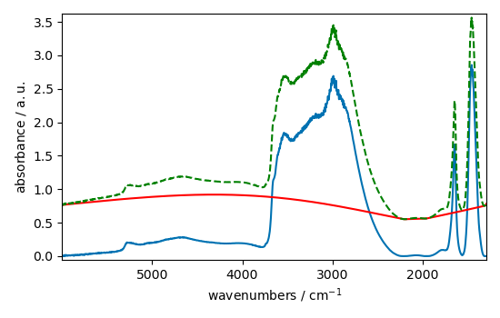
- 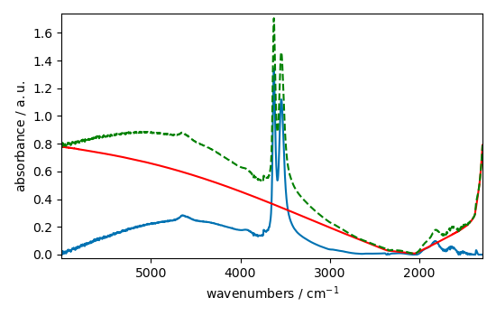
- 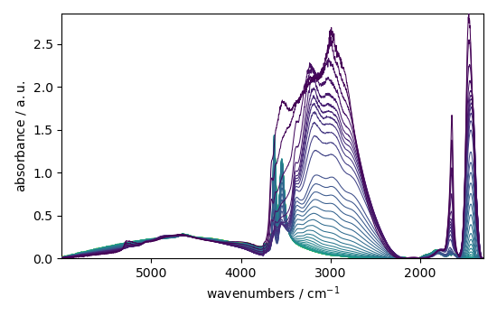
This ends the example ! The following line can be uncommented if no plot shows when running the .py script with python
# scp.show()
Total running time of the script: (0 minutes 6.364 seconds)